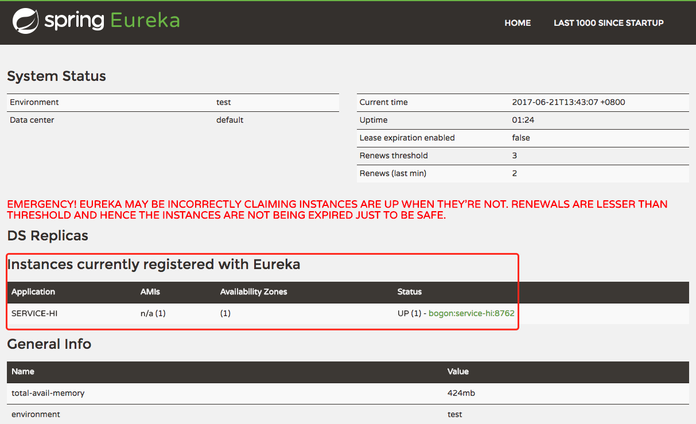

Eureka 是 Netflix 开源的一款提供服务注册和发现的产品。
Eureka 由两个组件组成： Eureka 服务器 和 Eureka 客户端。Eureka 服务器 用作服务注册服务器。Eureka 客户端 是一个 Java 客户端，用来简化与服务器的交互、作为轮询负载均衡器，并提供服务的故障切换支持。
官方对自己的定义是：
Eureka is a REST (Representational State Transfer) based service that is primarily used in the AWS cloud for locating services for the purpose of load balancing and failover of middle-tier servers.
通俗点讲什么是服务注册发现？
服务注册与发现就像是在一个聊天室，每个用户来的时候去服务器上注册，这样你的好友们就能看到你，你同时也将获取好友的上线列表。在微服务中，服务就相当于聊天室的用户，而服务注册中心就像聊天室服务器一样。
Eureka特性
- Eureka Server 具有服务定位/发现的能力，在各个微服务启动时，会通过 Eureka Client 向Eureka Server 进行注册自己的信息（例如网络信息）。
- 一般情况下，微服务启动后，Eureka Client 会周期性向 Eureka Server 发送心跳检测(默认周期为30秒)以注册/更新自己的信息。
- 如果 Eureka Server 在一定时间内(默认90秒)没有收到 Eureka Client 的心跳检测，就会注销掉该微服务点。
- 同时，Eureka Server 本身也是 Eureka Client，多个 Eureka Server 通过复制注册表的方法来完成服务注册表的同步从而达到集群的效果。
为什么选择 Eureka
1) 它提供了完整的 Service Registry 和 Service Discovery 实现
首先是提供了完整的实现，并且也经受住了 Netflix 自己的生产环境考验，相对使用起来会比较省心。
2) 和 Spring Cloud 无缝集成
服务端和客户端都是 Java 编写的，针对微服务场景，并且和 Netflix 的其他开源项目以及 Spring Cloud 都有着非常好的整合，具备良好的生态。
3) Open Source
最后一点是开源，由于代码是开源的，所以非常便于我们了解它的实现原理和排查问题。
Eureka Server 使用介绍
在 Spring Boot 项目的 pom.xml 中加入 spring-cloud-starter-eureka-server
使用 Spring Cloud 需要在 pom.xml 中加入 Spring Cloud 的父级引用，让 Spring 帮我们管理依赖版本。
1 | <dependencies> |
在application.yml中配置
Eureka 是一个高可用的组件，它没有后端缓存，每一个实例注册之后需要向注册中心发送心跳（因此可以在内存中完成），在默认情况下 Erureka Server 也是一个 Eureka Client，必须要指定一个 Server。
1 | server: |
添加 Application.java 启动类 添加 @EnableEurekaServer 注解
1 | @SpringBootApplication |
Eureka Client 使用介绍
服务注册与服务发现都是使用 Eureka Client，所以在 Spring Boot 项目的 pom.xml 中加入
1 | <dependency> |
在 application.yml 中加入 Eureka 的 Server 配置
1 | server: |
需要指明 spring.application.name，这个很重要，这在以后的服务与服务之间相互调用一般都是根据这个 name。
启动上边两个程序后，访问 http://localhost:8761/ 可以看到下边的页面，同时看到我们的 service-hi 也注册上来了。

在本地调试时出现了这样的问题，如上图所示，中间部分有一行红色大字 EMERGENCY! EUREKA MAY BE INCORRECTLY CLAIMING INSTANCES ARE UP WHEN THEY’RE NOT. RENEWALS ARE LESSER THAN THRESHOLD AND HENCE THE INSTANCES ARE NOT BEING EXPIRED JUST TO BE SAFE.，原因是 Eureka 的自我保护机制:
Eureka Server 在运行期间，会统计心跳成功率在 15分钟 之内是否低于85%，如果出现低于的情况（在单机调试的时候很容易满足，实际在生产环境上通常是由于网络不稳定导致），Eureka Server 会将当前的实例注册信息保护起来，同时提示这个警告。至于为什么需要有这个自我保护机制，官方的解释是：Service 不是强一致的，所以会有部分情况下没发现新服务导致请求出错，对于Service 发现服务而言，宁可返回某服务 5分钟 之前在哪几个服务器上可用的信息，也不能因为暂时的网络故障而找不到可用的服务器，而不返回任何结果。
其他实现方式比较
DNS 可以算是最为原始的服务发现系统，但是在服务变更较为频繁，即服务的动态性很强的时候，DNS 记录的传播速度可能会跟不上服务的变更速度，这将导致在一定的时间窗口内无法提供正确的服务位置信息，所以这种方案只适合在比较静态的环境中使用，不适用于微服务。
基于 ZooKeeper、Etcd 等分布式键值对存储服务来建立服务发现系统在现在看起来 也不是一种很好的方案，一方面是因为它们只能提供基本的数据存储功能，还需要在外围做大量的开发才能形成完整的服务发现方案。另一方面是因为它们都是强一致性系统，在集群发生分区时会优先保证一致性、放弃可用性，而服务发现方案更注重可用性，为了保证可用性可以选择最终一致性，这两方面原因共同导致了 ZooKeeper、Etcd 这类系统越来越远离服务发现方案的备选清单，像 SmartStack 这种依赖 ZooKeeper 的服务发现方案也逐渐发觉 ZooKeeper 成了它的薄弱环节。与 ZooKeeper、Etcd 或者依赖它们的方案不同，Eureka 是个专门为服务发现从零开始开发的项目，Eureka 以可用性为先，可以在多种故障期间保持服务发现和服务注册功能可用，虽然此时会存在一些数据错误，但是 Eureka 的设计原则是“存在少量的错误数据，总比完全不可用要好”，并且可以在故障恢复之后按最终一致性进行状态合并，清理掉错误数据。
Eureka 有个强大的对手 Consul。Consul 是 HashiCorp 公司的商业产品，它有一个开源的基础版本，这个版本在基本的服务发现功能之外，还提供了多数据中心部署能力，包括内存、存储使用情况在内的细粒度服务状态检测能力，和用于服务配置的键值对存储能力（这是一把双刃剑，使用它可以带来便捷，但是也意味着和 Consul 的较强耦合性），这几个能力 Eureka 目前都没有。但是 Consul 对业务的侵入性较大，在与 SpringBoot 项目对接时没有那么方便，而且 Consul 由一家商业软件公司提供，那么必然或多或少的存在商业软件的某些弊端。